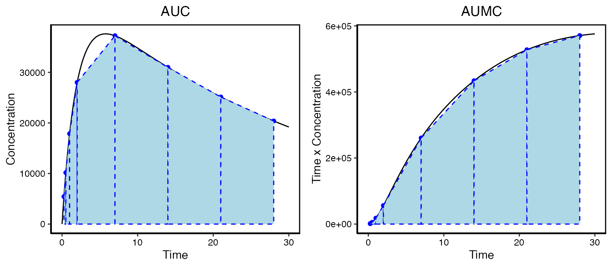

Noncompartmental Analysis
Source:vignettes/noncompartmental_analysis.Rmd
noncompartmental_analysis.RmdIntroduction
Non-compartmental analysis (NCA) is a simple and quick method for evaluating the exposure of a drug. It allows you to evaluate things like linearity and in vivo exposure. To illustrate this consider an antibody given in a subcutaneous injection. The actual exposure profile a patient might experience is given in the solid black line in the left panel. But we don’t yet have the ability to sample in a continuous fashion. What we might observer is given by the blue points.

Generally NCA will determine the following directly from the data:
-
Cmax- Maximum observed concentration (units=concentration) -
Tmax- The time where the maximum concentration was observed (units=time) -
AUC- The area under the curve () -
AUMC- The area under the first moment curve ()
These properties are all based on observational data. So the
Cmax and Tmax will most certainly not be at
the actual maximum concentration but as long as we sample judiciously it
will give us a good approximation. Similarly, the calculated
AUC and AUMC will be different than the actual
values. To calculate the areas you need to dig back into your calculus
text books to the trapezoid method. Basically each sampling interval is
a trapezoid and the area of each is calculated and added up for all of
the n samples:
This can be done in Excel pretty easily. Depending on the data and the analysis other properties can be calculated. For example we can calculate the clearance, mean residence time, steady-state volume of distribution and terminal half-life:
- Clearance:
- Mean residence time:
- Steady state volume of distribution:
- Half-life: Terminal slope of the natural log of the data
Properties like AUC and AUMC can also be be calculated using extrapolation from the last time point to infinity to account for data beyond the observations at hand. The subsequent values of clearance, volumes of distribution, etc can also change with extrapolation.
There is a lot of nuance associated with these calculations, and it is good to rely on software that focuses on this type of analysis. The PKNCA package has been developed with this in mind. The ruminate app provides an interface to functionality found in PKNCA and will generate code you can use to get started with PKNCA.
Data format
To run NCA you need your data formatted in a specific way. The names of the columns can be defined by the user. Some columns are required, others are optional, and others are only required depending on how the user wants to specify dosing. See below for a general description of the columns followed by more information about how dosing is inferred:
- Subject ID: Unique id for each subject in the dataset (required)
- Time: Observation time since the first dose (required)
- Nominal Time: Time since the most recent dose (optional, needed to determine dosing from columns)
- Dose: Amount of dose (required)
- Concentration: Observed concentration (NA for missing values, required)
- Route: Dosing route (intravascular or extravascular, required)
- Other Grouping: Other columns used for grouping (optional)
- Dose Duration: Duration of infusion (optional)
- Dosing Cycle or Period: The most recent dose cycle or period (optional, needed for dosing from columns)
- Event ID: EVID column from NONMEM used to distinguish dosing and observation records (optional, needed for dosing from rows)
- Analyte: Used if multiple analytes are present in the dataset (optional)
Note that Dose and Concentration need to have the same mass units.
Dosing information
Dosing will be extracted from the datasets, and it can be incorporated in two ways. One is that the dosing information is stored in columns of the dataset. This is the simplest and most straight forward way of storing the dosing information. The other method is that dosing is specified as individual records (rows) in the dataset (if your data is formatted for NONMEM, you can use this).
Determining dosing from columns
Beyond the required columns to infer dosing from columns you must also have the following columns defined: Dose, Dosing Cycle or Period, and Nominal Time.
Determining dosing from rows (NONMEM format)
If your dataset is formatted for NONMEM you can extract the dosing from those rows that contain the dosing records. For this case it is expected you will have the following columns in your dataset: Dose (AMT in NONMEM) and Event ID (EVID in NONMEM).
Some notes on dosing information. For each interval where you want to calculate dose-dependent parameters, you will need to provide information about dosing in those intervals. In a multiple dose setting where you have intervals where you do not have enough PK data to run NCA it, is not necessary to provide dosing information for those intervals. For example if you have four weekly doses but only have intensive sampling on weeks 1 and 4 but peak and trough on weeks 2 and 3, you do not have to provide dosing information for weeks 2 and 3. However there are certain parameters that PKNCA will provide if that dosing and intermediate sampling information is provided (e.g. time to steady-state). So if all you are interested in is parameters for intervals with intensive sampling, then you don’t need to worry about having dosing information for the other intervals.
NCA analysis intervals
If you select an interval for analysis, it is necessary that you have
observations at the beginning and end of that interval. If you do not
have observations at dosing times (e.g. you dose at time zero but your
first observation is at 15 minutes post-dose) and you want to use the
dosing time as the beginning of your interval, you can have an
observation that is BQL or missing (NA) at the dosing time
(zero).
Configuration File
MC:
# Module informaiton
module:
type: "NCA"
# internal R Object: module ID used in deployment
depends:
id_ASM: "ASM"
id_UD: "UD"
id_DW: "DW"
code: # module specific code options
packages: ["PKNCA", "dplyr", "stringr", "formods", "ruminate", "onbrand"]
readOnly: TRUE
mode: r
preamble: |-
# Non-compartmental analysis ----------------------------------------------
compact:
code: TRUE
clip: TRUE
reporting:
enabled: TRUE
# Text format determines how text will be rendered. It can be either "md"
# for Markdown or "text" for plain text. This will also control things
# like table headers.
text_format: "md"
# Priority of reporting relative to other modules (higher numbers are
# reported first)
priority: 10
# The order of the figure and table ids (e.g. fg_ind_obs) represents the
# order in which figures and tables will be reported. Each id should have
# the following optoins:
#
# caption_single Caption used when a table or figure needs only a
# single page.
#
# caption_multiple Caption used when a table or figure spans multiple
# pages.
#
# title_single Slide title used when a table or figure needs only a
# single page.
#
# title_multiple Slide title used when a table or figure spans multiple
# pages.
#
# sub_title_single Slide sub_title used when a table or figure needs only a
# single page.
#
# sub_title_multiple Slide sub_title used when a table or figure spans multiple
# pages.
#
# The following placeholders can be used bu surrounding them with ===. For
# example to include the total number of figures you would use
# ===FIGTOT===:
#
# NCADESC Description of the NCA analysis provided by the
# user in the UI (tables and figures).
#
# FIGNUM Number of the current figure for figures that span
# multiple pages (figures only).
#
# FIGTOT Total number of figures for figures that span
# multiple pages (figures only).
#
# TABNUM Number of the current table for tables that span
# multiple pages (tables only).
#
# TABTOT Total number of tables for tables that span multiple
# pages (tables only).
#
#
figures:
fg_ind_obs:
caption_single: "===NCADESC=== (Individual Observations)"
caption_multiple: "===NCADESC=== (Individual Observations, ===FIGNUM=== of ===FIGTOT===)"
title_single: " Individual Observations"
title_multiple: " Individual Observations"
sub_title_single: "===NCADESC==="
sub_title_multiple: "===NCADESC=== (===FIGNUM=== of ===FIGTOT===)"
tables:
tb_ind_params:
caption_single: "===NCADESC=== (Individual Parameters)"
caption_multiple: "===NCADESC=== (Individual Parameters, ===TABNUM=== of ===TABTOT===)"
tb_ind_obs:
caption_single: "===NCADESC===, Individual Data"
caption_multiple: "===NCADESC===, Individual Data (===TABNUM=== of ===TABTOT===)"
# Default number of significant digits
digits: 3
# When reporting units the * will be replaced with this value:
mult_str: "⋅"
# You can use unicode here like this "∞"
# How infinity is represented in reports like table headers
# to change inf in parameters you need to change them for the individual
# parameters below.
infinity: "inf"
not_calc: "NC"
not_sampled: "NS"
blq: "BLQ"
# Here we list all the notes that can be present in tables. You need an
# entry for whatever you put in not_calc and blq above here.
notes:
NC: "not calculated"
NS: "not sampled"
BLQ: "below the level of quantification"
notifications:
ana_add_int_success: "Interval added: ===DETAILS==="
# Put different formatting options (widths, heights,
# shinyWidgets button sizes, etc) here.
formatting:
# Dimensions of code snippet box
code:
width: 800
height: 300
# Dimensions of the notes text area
notes:
width: "520px"
height: "75px"
# Width of textInput and selectInput UI elements in the
# nca configuration
nca_config_option:
width: 150
# Width of the figure preview (must be numeric)
# The options nrow and ncol refer to the default number of rows and
# columns when faceting. The options nrow_opt and nrow_col are values the
# user can select.
#
preview:
width: "100%"
height: "600px"
nrow: 4
ncol: 4
nrow_opt: [ 1, 2, 3, 4, 5, 6, 7, 8 ]
ncol_opt: [ 1, 2, 3, 4, 5, 6, 7, 8 ]
logy: TRUE
fig_type: "report"
tab_type: "report"
# These apply to the intervals table
dose_from:
default: "cols"
tooltip: "Dosing information can be found in either columns (column for dose, dose cycle, nominal time) or rows (one row for each dose event distinguished by an event ID (EVID) column)."
tooltip_position: "top"
intervals:
width: 600
height: 175
intervals_start:
width: 50
intervals_stop:
width: 50
intervals_np_text:
width: 375
intervals_delete:
width: 75
button_ana_run:
size: "sm"
block: TRUE
button_ana_del:
size: "sm"
block: TRUE
tooltip: "Delete the current analysis."
tooltip_position: "right"
button_ana_save:
size: "sm"
block: TRUE
tooltip: "Save the caption and notes and apply the data view for the current analysis."
tooltip_position: "right"
button_ana_clip:
size: "sm"
block: TRUE
tooltip: "Copy the code to generate the current analysis to the clipboard."
tooltip_position: "right"
button_fg_save:
size: "sm"
block: TRUE
#tooltip: "tooltip"
#tooltip_position: "right"
button_tb_save:
size: "sm"
block: TRUE
#tooltip: "tooltip"
#tooltip_position: "right"
button_ana_copy:
size: "sm"
block: TRUE
tooltip: "Make a copy of the current analysis."
tooltip_position: "right"
button_ana_new:
size: "sm"
block: TRUE
tooltip: "Create a new analysis."
tooltip_position: "right"
button_ana_add_int:
size: "sm"
block: TRUE
button_ana_use_scenario:
size: "sm"
block: TRUE
check_fg_ind_obs:
width: 75
select_ana_interval_range:
width: 200
text_ana_interval_start:
width: 75
text_ana_interval_stop:
width: 75
select_current_view:
width: 200
select_ana_fig_view:
width: 250
select_ana_tab_view:
width: 250
select_ana_source_sampling:
width: 150
select_ana_nca_parameters:
width: 150
# ?pickerOptions
picker_options:
liveSearch: TRUE
actionsBox: TRUE
select_ana_col_id:
width: 150
tooltip: "Unique id for each subject in the dataset (required)"
tooltip_position: "bottom"
select_ana_col_dose:
width: 150
tooltip: "Amount of dose (required)"
tooltip_position: "bottom"
select_ana_col_dur:
width: 150
tooltip: "Duration of infusion (optional)"
tooltip_position: "bottom"
select_ana_col_conc:
width: 150
tooltip: "Observed concentration (NA for missing values, required)"
tooltip_position: "bottom"
select_ana_col_route:
width: 150
tooltip: "Dosing route (intravascular or extravascular, required)"
tooltip_position: "bottom"
select_ana_col_time:
width: 150
tooltip: "Observation time since the first dose (required)"
tooltip_position: "bottom"
select_ana_col_ntime:
width: 150
tooltip: "Time since the most recent dose (optional, needed to determine dosing from columns)"
tooltip_position: "bottom"
select_ana_col_group:
width: 150
tooltip: "Other columns used for grouping (optional)"
tooltip_position: "bottom"
select_ana_col_analyte:
width: 150
tooltip: "Used if multiple analytes are present in the dataset (optional)"
tooltip_position: "bottom"
select_ana_col_evid:
width: 150
tooltip: "EVID column from NONMEM used to distinguish dosing and observation records (optional, needed for dosing from rows)"
tooltip_position: "bottom"
select_ana_col_cycle:
width: 150
tooltip: "The most recent dose cycle or period (optional, needed for dosing from columns)"
tooltip_position: "bottom"
select_ana_units_dose:
width: 150
select_ana_units_time:
width: 150
select_ana_units_conc:
width: 150
select_ana_units_amt:
width: 150
select_ana_scenario:
width: 150
select_fg_ind_obs_ncol:
width: 50
select_fg_ind_obs_nrow:
width: 50
select_fg_ind_obs_page:
width: 100
select_tb_page:
width: 100
errors:
nca_run_filed: "Unable to run PKNCA. Please, see below for details."
bad_input: "Input error message"
nca_no_fig: "There are no figures to display. You must run the analysis first"
nca_no_tab: "There are no tables to display. You must run the analysis first"
tooltips:
# Set to FALSE to disable tool tips for this module
include: TRUE
notes: "Optional analysis notes that will be carried over and used in other elements (e.g. reporting)."
ana_key: "Unique description used for referencing analysis and in other elements (e.g. reporting)."
show_code: "Show analysis code"
nca_intervals: "Current NCA intervals"
# Set urls to NULL to disable
url_dosing: "https://ruminate.ubiquity.tools/articles/noncompartmental_analysis.html#dosing-information"
url_data: "https://ruminate.ubiquity.tools/articles/noncompartmental_analysis.html#data-format"
url_intervals: "https://ruminate.ubiquity.tools/articles/noncompartmental_analysis.html#nca-analysis-intervals"
url_parameters: "https://ruminate.ubiquity.tools/articles/noncompartmental_analysis.html#nca-parameters"
ph:
text_ana_interval_start: 0
text_ana_interval_stop: "number or Inf"
notes: "Optional NCA notes that will be carried over and used in other elements (e.g. reporting)."
# This controls the figure and table selection for an analysis. The order of
# the keys (e.g., tb_ind_params, tb_sum_params, etc) controls the
# order they are dispalyed in the selector and the text controls what's show
# in the interface.
figures:
fg_ind_obs:
choice: "Individual Profiles"
subtext: "Faceted view of individual time-course"
tables:
tb_ind_params:
choice: "Individual NCA Parameters"
subtext: "Listings of subject-level NCA parmaeters"
tb_sum_params:
choice: "Summarized NCA Parameters"
subtext: "Listings of NCA parmaeters summarized by group/analyte"
tb_ind_obs:
choice: "Individual Data"
subtext: "Listings of subject-level time-course data"
tb_nca_raw:
choice: "Raw NCA Output"
subtext: "Output from PKNCA with requested and dependent parameters"
labels:
ana_key: "title/caption"
new_ana: "New"
run_ana: "Run NCA"
save_ana: "Save"
del_ana: "Delete"
copy_ana: "Copy"
clip_ana: "Code"
fg_save: "Apply changes"
tb_save: "Apply changes"
curr_anas_none: "No figures yet created"
no_dataset: "No datasets available to analyze. You need to load a dataset to use this module."
ana_use_scenario: "Analysis Template"
ana_add_int: "Add/Update Interval"
no_intervals: "No intervals added yet"
panel_analysis_opts: "Analysis Details"
panel_figures: "Figures"
panel_tables: "Tables"
panel_nca_config: "NCA Options"
text_ana_interval_start: "Start"
text_ana_interval_stop: "End"
select_ana_interval_range: "Interval Range"
# Headings used in the UI
head_intervals: "Analysis Time Intervals"
head_intervals_current: "Current Intervals"
head_analysis_template: "Use Analysis Template"
head_intervals_create: "Create an Interval"
head_dose_from: "Dosing Information"
head_col_mapping: "Identify Columns"
head_col_mapping_required: "Required"
head_col_mapping_optional: "Optional"
head_run_analysis: "Run Analysis"
head_units: "Units"
select_current_view: "Data from"
select_current_ana: "Current Analysis"
select_ana_scenario: NULL # "Type of Analysis:"
select_ana_col_id: "Subject ID"
select_ana_col_time: "Time"
select_ana_col_ntime: "Nominal Time"
select_ana_col_dose: "Dose"
select_ana_col_dur: "Dose Duration"
select_ana_col_conc: "Concentration"
select_ana_col_route: "Route"
select_ana_col_group: "Other Grouping"
select_ana_col_cycle: "Dosing Cycle or Period"
select_ana_col_evid: "Event ID"
select_ana_col_analyte: "Analyte"
select_ana_units_time: "Time"
select_ana_units_dose: "Dose"
select_ana_units_conc: "Concentration"
select_ana_units_amt: "Amount"
select_ana_nca_parameters: "Parameters"
select_fg_ind_obs_nrow: "Rows"
select_fg_ind_obs_ncol: "Columns"
select_fg_ind_obs_page: "Show Page"
select_tb_page: "Show Page"
check_fg_ind_obs_logy: "Log 10 y-scale"
switch_ana_include_units: "Include Units"
switch_ana_fig: NULL
switch_ana_fig_interactive: "Interactive"
switch_ana_fig_report: "Report Preview"
switch_ana_dose_from: "Dosing Found In"
switch_ana_dose_from_rows: "Rows"
switch_ana_dose_from_cols: "Columns"
switch_ana_tab: NULL
switch_ana_tab_interactive: "Interactive"
switch_ana_tab_report: "Report Preview"
select_ana_source_sampling: "Data Sampling"
busy:
run_nca: "Running NCA be patient."
PKNCA_raw:
ID: "Subject ID"
start: "Initial time of the analysis interval."
end: "Final time of the analysis interval."
PPTESTCD: "Parameter name from PKNCA."
PPORRES: "parameter value."
exclude: "Reason for parameter exclusion (NA when parameter was calculated)."
PPORRESU: "Parameter units."
# For details on the PKNCA options see this vignette:
# https://billdenney.github.io/pknca/articles/v40-options-for-controlling-PKNCA.html
# This section contains information about different options, metadata about
# them, default values, etc. Using this, the options UI for an analysis is
# generated automatically. Each configuration option has the following:
#
# group - This is how configuration options will be grouped in the app
# label - Short textual description
# tooltip - More detailed description of the option and what goes into it.
# Set to NULL to not display a tool tip.
# type - List of possible types. For example if you have "numeric" then
# "character" the value will be evaluated as numeric, if this is
# NA then it will be evaluated as character. Allowed types:
# - numeric
# - character
# - mixed (numeric and character)
# - logical (TRUE or FALSE)
# value - Default value in the UI
# options - If set to NULL a text input box will be created for this option,
# if there are options then a selection box will be created.
# pknca_option - The actual option set with PKNCA
nca_config:
adj_r_squared_factor:
group: General
# BILL I need a better label for this
label: "r² (Adj) factor"
tooltip: "The adjusted r² for the calculation of λz has this factor times the number of data points added to it. It allows for more data points to be preferred in the calculation of half-life."
type: "numeric"
value: 0.0001
options: NULL
pknca_option: adj.r.squared.factor
max_missing:
group: General
label: "Max missing (frac)"
tooltip: "The maximum fraction of the data that may be missing (‘NA’) to calculate summary statistics."
type: "numeric"
value: 0.5
options: NULL
pknca_option: max.missing
auc_method:
group: AUC
label: Method
tooltip: "The method used to calculate the AUC and related statistics."
type: "character"
value: "lin up/log down"
options: ["lin up/log down", "linear"]
pknca_option: auc.method
conc_na:
group: Missing and BLQ Values
label: Missing values
tooltip: "Determines how missing (NA) values are generally handled. Can be either drop or a numeric value to use. "
type: "mixed"
value: "drop"
options: NULL
pknca_option: conc.na
conc_blq_first:
group: Missing and BLQ Values
label: First value BLQ
tooltip: "Indicates what to do if the first observation is BLQ. It can either be drop, keep, or a numeric value to use."
type: "mixed"
value: "keep"
options: NULL
pknca_option: conc.blq$first
conc_blq_middle:
group: Missing and BLQ Values
label: Middle values BLQ
tooltip: "Indicates what to do if a value between the first and last observations is BLQ. It can either be drop, keep, or a numeric value to use."
type: "mixed"
value: "drop"
options: NULL
pknca_option: conc.blq$middle
conc_blq_last:
group: "Missing and BLQ Values"
label: "Last Value BLQ"
tooltip: "Indicates what to do if the last observation is BLQ. It can either be drop, keep, or a numeric value to use."
type: "mixed"
value: "keep"
options: NULL
pknca_option: conc.blq$last
first_tmax:
group: "General"
label: "Multiple tmax use first"
tooltip: "If there is more than one concentration equal to Cmax, should the time selected for Tmax be the first value? If TRUE, the first will be selected. If FALSE, the last will be selected."
type: "logical"
value: TRUE
options: [TRUE, FALSE]
pknca_option: first.tmax
allow_tmax_in_half_life:
group: "Half-Life"
label: "Allow tmax in half-life"
tooltip: "Should the concentration and time at Tmax be allowed in the half-life calculation? TRUE is yes and FALSE is no."
type: "logical"
value: FALSE
options: [TRUE, FALSE]
pknca_option: allow.tmax.in.half.life
min_hl_points:
group: "Half-Life"
label: "Min points"
tooltip: "What is the minimum number of points required to calculate half-life?"
type: "numeric"
value: 3
options: [ 2, 3, 4, 5 ]
pknca_option: min.hl.points
min_span_ratio:
group: "Half-Life"
label: "Min span ratio"
# BILL this is a bit cryptic
tooltip: "What is the minimum span ratio required to consider a half-life valid?"
type: "logical"
value: 2
options: NULL
pknca_option: min.span.ratio
min_hl_r_squared:
group: "Half-Life"
label: "Min r² value"
tooltip: "What is the minimum r² value to consider a half-life calculation valid?"
type: "numeric"
value: 0.9
options: NULL
pknca_option: min.hl.r.squared
max_aucinf_pext:
group: "AUC"
label: "Max allowed extrap (%)"
tooltip: "What is the maximum percent extrapolation to consider an AUC∞ valid?"
type: "numeric"
value: 20
options: NULL
pknca_option: max.aucinf.pext
# progress_bar:
# group: "General"
# label: "Progress bar"
# tooltip: "Show progress bar"
# type: "logical"
# value: TRUE
# options: [TRUE, FALSE]
# pknca_option: progress
# Prefix used to create NCA analysis objects in generated code
nca_object_name: "myANA_"
# The following patterns are used when detecting columns in your dataset
# automatically. You can create a multiple patterns. They will be processed
# in order from left to right. The first pattern to match will return that
# column. For example if you set id to:
#
# id: ["^(?i)id$", "(?i)subject"]
#
# It will match any column that is id. The (?i) is case insensitive. But it
# wont match IDs for example because it looks for something that starts with
# i (^) and ends with d ($).
#
# If that fails it will look for any column with the text 'subject' in it
# regardless of case. So it would match SUBJECT, subject, Subjects,
# subject id, etc.
#
# If you set it to NULL no attempt will be made to detect the column.
detect_col:
id: ["^(?i)id$", "(?i)subject", "(?i)animal"]
time: ["^(?i)time", "(?i)ntime" ]
ntime: ["^(?i)ntime", "(?i)time" ]
conc: ["^(?i)conc", "^(?i)dv$", "^(?i)pcstresn$", "^(?i)lbstresn$", "^(?i)AVAL(N|NUM)?$"]
dose: ["(?i)dose", "^(?i)ecdose?$", "^(?i)exdose?$"]
evid: ["(?i)evid"]
route: ["(?i)route"]
cycle: ["(?i)cycle", "(?i)dose_num", "(?i)period"]
group: NULL
analyte: NULL
dur: NULL
# Routes may be specified in the dataset in a more detailed or convenient
# format than what is needed for analysis. Here you can specify patterns
# that can be used to detect routes. For details on the regular expressions
# that can be used see the detect_col section above. In general you can use
# the format of:
#
# myroute: ["regex1", "regex2"]
#
# This will assign the route to 'myroute' in the ROUTE column if it matches
# regex1 or regex2.
#
detect_route:
intravascular: ["^(?i)iv$"]
extravascular: ["^(?i)sc$", "^(?i)oral"]
# These are default analysis scenarios that are shown in the App. They will
# be shown in the order defined. Each scenario has the following attributes:
# - description: Free form textual description shown to the user
# - nca_parameters: List of nca parameters to be calculated
# - sampling: Can be either "serial" or "sparse"
# BILL: Get relevant scenarios from bill here
ana_scenarios:
sd_iv:
description: "Single Dose (IV)"
nca_parameters: ["cmax", "auclast", "aucinf.obs"]
sampling: "serial"
intervals:
- row:
start: 0
stop: Inf
nca_parameters: ["aucinf.obs"]
- row:
start: 0
stop: 21
nca_parameters: ["cmax", "auclast"]
md_iv:
description: "Multiple Dose IV"
nca_parameters: ["cmax", "auclast", "aucinf.obs"]
sampling: "serial"
intervals:
- row:
start: 0
stop: Inf
nca_parameters: ["cmax", "auclast","aucinf.obs"]
sd_iv_sparse:
description: "Single Dose (IV) Sparse Sampling"
nca_parameters: ["cmax", "sparse_auclast"]
sampling: "sparse"
intervals:
- row:
start: 0
stop: Inf
nca_parameters: ["cmax", "sparse_auclast"]
md_iv_sparse:
description: "Multiple Dose IV Sparse Sampling"
nca_parameters: ["cmax", "sparse_auclast"]
sampling: "sparse"
intervals:
- row:
start: 0
stop: Inf
nca_parameters: ["cmax", "sparse_auclast"]
# This is the default shown when the app loads or a new analysis is created
ana_scenario_def: "sd_iv"
# Here are all of the available NCA parameters. Each field is the name of
# the parameter used in PKNCA. See the table in this vignette for the
# available parameters:
#
# https://cran.r-project.org/web/packages/PKNCA/vignettes/v03-selection-of-calculation-intervals.html
#
# Each of parameter has the following
#
# - description: This is a verbose description of the parameter. If set to NULL the
# description from PKNCA will be used. Set it to other text to
# overwrite it. This description will also be used in exports as
# well.
#
# - text: Textual description to show the user. If set to NULL it
# will use the text form PKCNA.
#
# - md: Markdown formatted value of text.
#
# - group: This is how the paramters will be grouped in the UI that
# is generated.
#
# To limit the options the user sees you simply need to comment out the
# parameters you do not want in the App. Alterantively you can use the
# grouping below to have the most common parameters together at the top and
# the remaining in case they are needed.
#
# BILL can you go through the text and md elements below and make any
# changes you think make sense. For example is there a better way to label
# the parameter aucint.inf.obs.dose :).
#
nca_parameters:
aucall:
description: NULL
text: NULL
md: "AUC~all~"
group: "Common Parameters"
adj.r.squared:
description: NULL
text: "r² (Adj)"
md: "Adj. R^2^"
group: "Other"
ae:
description: NULL
text: NULL
md: "AE"
group: "Other"
aucall.dn:
description: NULL
text: NULL
md: "AUC~all,dn~"
group: "Other"
aucinf.obs:
description: NULL
text: NULL
md: "AUC~inf,obs~"
group: "Other"
aucinf.obs.dn:
description: NULL
text: NULL
md: "AUC~inf,obs,dn~"
group: "Other"
aucinf.pred.dn:
description: NULL
text: NULL
md: "AUC~inf,pred,dn~"
group: "Other"
aucint.all:
description: NULL
text: NULL
md: "AUC~int,all~"
group: "Other"
aucint.all.dose:
description: NULL
text: NULL
md: "AUC~int,all,dose~"
group: "Other"
aucint.inf.obs:
description: NULL
text: NULL
md: "AUC~int,inf,obs~"
group: "Other"
aucint.inf.obs.dose:
description: NULL
text: NULL
md: "AUC~int,inf,obs,dose~"
group: "Other"
aucint.inf.pred:
description: NULL
text: NULL
md: "AUC~int,inf,pred~"
group: "Other"
aucint.inf.pred.dose:
description: NULL
text: NULL
md: "AUC~int,inf,pred,dose~"
group: "Other"
aucint.last:
description: NULL
text: NULL
md: "AUC~int,last~"
group: "Other"
aucint.last.dose:
description: NULL
text: NULL
md: "AUC~int,last,dose~"
group: "Other"
aucivall:
description: NULL
text: NULL
md: "AUC~iv,all~"
group: "Other"
aucivinf.obs:
description: NULL
text: NULL
md: "AUC~iv,inf,obs~"
group: "Other"
aucivinf.pred:
description: NULL
text: NULL
md: "AUC~iv,inf,pred~"
group: "Other"
aucivint.all:
description: NULL
text: NULL
md: "AUC~iv,int,all~"
group: "Other"
aucivint.last:
description: NULL
text: NULL
md: "AUC~iv,int,last~"
group: "Other"
aucivlast:
description: NULL
text: NULL
md: "AUC~iv,last~"
group: "Other"
aucivpbextall:
description: NULL
text: NULL
md: "AUC~iv,pbe,all~"
group: "Other"
aucivpbextinf.obs:
description: NULL
text: NULL
md: "AUC~iv,pbe,inf,obs~"
group: "Other"
aucivpbextinf.pred:
description: NULL
text: NULL
md: "AUC~iv,pbe,inf,pred~"
group: "Other"
aucivpbextint.all:
description: NULL
text: NULL
md: "AUC~iv,pbe,inf,all~"
group: "Other"
aucivpbextint.last:
description: NULL
text: NULL
md: "AUC~iv,pbe,inf,last~"
group: "Other"
aucivpbextlast:
description: NULL
text: NULL
md: "AUC~iv,pbe,last~"
group: "Other"
auclast:
description: NULL
text: NULL
md: "AUC~last~"
group: "Other"
auclast.dn:
description: NULL
text: NULL
md: "AUC~last,dn~"
group: "Other"
aucpext.obs:
description: NULL
text: NULL
md: "AUC~pext,obs~"
group: "Other"
aucpext.pred:
description: NULL
text: NULL
md: "AUC~pext,pred~"
group: "Other"
aumcall:
description: NULL
text: NULL
md: "AUMC~all~"
group: "Other"
aumcall.dn:
description: NULL
text: NULL
md: "AUMC~all,dn~"
group: "Other"
aumcinf.obs:
description: NULL
text: NULL
md: "AUMC~inf,obs~"
group: "Other"
aumcinf.obs.dn:
description: NULL
text: NULL
md: "AUMC~inf,obs,dn~"
group: "Other"
aumcinf.pred.dn:
description: NULL
text: NULL
md: "AUMC~inf,pred,dn~"
group: "Other"
aumclast:
description: NULL
text: NULL
md: "AUMC~last~"
group: "Other"
aumclast.dn:
description: NULL
text: NULL
md: "AUMC~last,dn~"
group: "Other"
c0:
description: NULL
text: NULL
md: "C~0~"
group: "Common Parameters"
cav:
description: NULL
text: NULL
md: "C~ave~"
group: "Other"
cav.int.all:
description: NULL
text: NULL
md: "C~ave,int,all~"
group: "Other"
cav.int.inf.obs:
description: NULL
text: NULL
md: "C~ave,int,int,obs~"
group: "Other"
cav.int.inf.pred:
description: NULL
text: NULL
md: "C~ave,int,int,pred~"
group: "Other"
cav.int.last:
description: NULL
text: NULL
md: "C~ave,int,last~"
group: "Other"
cav.dn:
description: NULL
text: NULL
md: "C~ave,dn~"
group: "Other"
ceoi:
description: NULL
text: NULL
md: "C~EOI~"
group: "Other"
cl.all:
description: NULL
text: NULL
md: "CL"
group: "Common Parameters"
cl.last:
description: NULL
text: NULL
md: "CL~last~"
group: "Common Parameters"
cl.obs:
description: NULL
text: NULL
md: "CL~obs~"
group: "Other"
cl.pred:
description: NULL
text: NULL
md: "CL~pred~"
group: "Other"
clast.obs:
description: NULL
text: NULL
md: "CL~last,obs~"
group: "Other"
clast.pred:
description: NULL
text: NULL
md: "CL~last,pred~"
group: "Other"
clast.pred.dn:
description: NULL
text: NULL
md: "CL~last,pred,dn~"
group: "Other"
clr.last:
description: NULL
text: NULL
md: "CL~R,last~"
group: "Other"
clr.obs:
description: NULL
text: NULL
md: "CL~R,obs~"
group: "Other"
clr.pred:
description: NULL
text: NULL
md: "CL~R,pred~"
group: "Other"
cmax:
description: NULL
text: NULL
md: "C~max~"
group: "Common Parameters"
cmax.dn:
description: NULL
text: NULL
md: "C~max,dn~"
group: "Other"
cmin:
description: NULL
text: NULL
md: "C~min~"
group: "Other"
cmin.dn:
description: NULL
text: NULL
md: "C~min,dn~"
group: "Other"
count_conc:
description: NULL
text: NULL
md: "N~obs~"
group: "Other"
ctrough:
description: NULL
text: NULL
md: "C~tr~"
group: "Other"
ctrough.dn:
description: NULL
text: NULL
md: "C~tr,dn~"
group: "Other"
deg.fluc:
description: NULL
text: NULL
md: "dgf"
group: "Other"
end:
description: NULL
text: NULL
md: "t~end~"
group: "Other"
f:
description: NULL
text: NULL
md: "f~b~"
group: "Other"
fe:
description: NULL
text: NULL
md: "f~e~"
group: "Other"
half.life:
description: NULL
text: NULL
md: "t~half~"
group: "Common Parameters"
kel.iv.last:
description: NULL
text: NULL
md: "k~el,iv,last~"
group: "Other"
kel.iv.obs:
description: NULL
text: NULL
md: "k~el,iv,obs~"
group: "Other"
kel.iv.pred:
description: NULL
text: NULL
md: "k~el,iv,pred~"
group: "Other"
kel.last:
description: NULL
text: NULL
md: "k~el,last~"
group: "Other"
kel.obs:
description: NULL
text: NULL
md: "k~el,obs~"
group: "Other"
kel.pred:
description: NULL
text: NULL
md: "k~el,pred~"
group: "Other"
lambda.z:
description: NULL
text: "λz"
md: "<ff:symbol>l</ff>~z~"
group: "Other"
lambda.z.n.points:
description: NULL
text: "λz,n"
md: "<ff:symbol>l</ff>~z,n~"
group: "Other"
lambda.z.time.first:
description: NULL
text: "λz (t 1ˢᵗ)"
md: "<ff:symbol>l</ff>~z~ (t 1^st^)"
group: "Other"
mrt.iv.last:
description: NULL
text: NULL
md: "MRT~iv,last~"
group: "Other"
mrt.iv.obs:
description: NULL
text: NULL
md: "MRT~iv,obs~"
group: "Other"
mrt.iv.pred:
description: NULL
text: NULL
md: "MRT~iv,pred~"
group: "Other"
mrt.last:
description: NULL
text: NULL
md: "MRT~last~"
group: "Other"
mrt.md.obs:
description: NULL
text: NULL
md: "MRT~md,obs~"
group: "Other"
mrt.md.pred:
description: NULL
text: NULL
md: "MRT~md,pred~"
group: "Other"
mrt.obs:
description: NULL
text: NULL
md: "MRT~obs~"
group: "Other"
mrt.pred:
description: NULL
text: NULL
md: "MRT~pred~"
group: "Other"
ptr:
description: NULL
text: NULL
md: "PTR"
group: "Other"
r.squared:
description: NULL
text: "r²"
md: "R^2^"
group: "Common Parameters"
span.ratio:
description: NULL
text: NULL
md: "SR"
group: "Other"
sparse_auclast:
description: NULL
text: NULL
md: "AUC~last,sp~"
group: "Sparse Analysis"
sparse_se:
description: NULL
text: NULL
md: "SE(AUC~last,sp~)"
group: "Sparse Analysis"
sparse_df:
description: NULL
text: NULL
md: "DF(AUC~last,sp~)"
group: "Sparse Analysis"
start:
description: NULL
text: NULL
md: "t~start~"
group: "Other"
swing:
description: NULL
text: NULL
md: "SWING"
group: "Other"
tfirst:
description: NULL
text: "t 1ˢᵗ"
md: "t~first~"
group: "Other"
thalf.eff.iv.last:
description: NULL
text: NULL
md: "t~half,eff,iv,last~"
group: "Other"
thalf.eff.iv.obs:
description: NULL
text: NULL
md: "t~half,eff,iv,obs~"
group: "Other"
thalf.eff.iv.pred:
description: NULL
text: NULL
md: "t~half,eff,iv,pred~"
group: "Other"
thalf.eff.last:
description: NULL
text: NULL
md: "t~half,eff,last~"
group: "Other"
thalf.eff.obs:
description: NULL
text: NULL
md: "t~half,eff,obs~"
group: "Other"
thalf.eff.pred:
description: NULL
text: NULL
md: "t~half,eff,pred~"
group: "Other"
time_above:
# JMH how is the conconcentration specified
description: NULL
text: NULL
md: "t~ab~"
group: "Other"
tlag:
description: NULL
text: NULL
md: "t~lag~"
group: "Other"
tlast:
description: NULL
text: NULL
md: "t~last~"
group: "Other"
totdose:
description: NULL
text: NULL
md: "Dose~tot~"
group: "Other"
vss.iv.last:
description: NULL
text: NULL
md: "V~ss,iv,last~"
group: "Other"
vss.iv.obs:
description: NULL
text: NULL
md: "V~ss,iv,obs~"
group: "Other"
vss.iv.pred:
description: NULL
text: NULL
md: "V~ss,iv,pred~"
group: "Other"
vss.last:
description: NULL
text: NULL
md: "V~ss,iv,last~"
group: "Other"
vss.md.obs:
description: NULL
text: NULL
md: "V~ss,md,obs~"
group: "Other"
vss.md.pred:
description: NULL
text: NULL
md: "V~ss,md,pred~"
group: "Other"
vss.obs:
description: NULL
text: NULL
md: "V~ss,obs~"
group: "Other"
vss.pred:
description: NULL
text: NULL
md: "V~ss,pred~"
group: "Other"
vz.obs:
description: NULL
text: NULL
md: "V~z,obs~"
group: "Other"
vz.pred:
description: NULL
text: NULL
md: "V~z,pred~"
group: "Other"
units:
# For reference this is the units vignette from PKNCA
#
# http://billdenney.github.io/pknca/articles/v07-unit-conversion.html
#
# Default value for whether or not to include units. This can
# be overwritten in the app.
include_units: TRUE
# Add unit options here, they will appear in the order they are
# entered. The _def below is the default when a new analysis is
# initialize. It must be in the list.
# BILL how will PKNCA handle units like µg
conc: ["ng/mL", "µg/mL", "g/L", "molar", "nM"]
conc_def: "ng/mL"
dose: ["g", "mg", "mg/kg", "µg", "µg/kg", "ng", "ng/kg"]
dose_def: "mg"
amt: ["g", "mg", "µg", "ng", "g", "moles", "µmoles", "nmoles"]
amt_def: "mg"
time: ["day", "hr", "min", "sec" ]
time_def: "day"
vol: ["mL", "L"]
# This is used to generate documentation about required columns in datasets.
# Yous hould only change the Column and Description elements. The others are
# used internally.
data_format:
columns:
- entry:
sname: "id"
Column: "Subject ID"
Required: "yes"
Description: "Unique subject identifier."
- entry:
sname: "time"
Column: "Time"
Required: "yes"
Description: "Time since the first dose. Must be numeric."
- entry:
sname: "ntime"
Column: "Nominal Time"
Required: "yes"
Description: "Time since the last dose in the cycle (same units as Time). Must be numeric."
- entry:
sname: "conc"
Column: "Concentration"
Required: "yes"
Description: "Observed concentration. Must be numeric, no NA values. Missing values should be set to 0."
# BILL should this be the dose given at time zero or total dose given over a cycle
- entry:
sname: "dose"
Column: "Dose"
Required: "yes"
Description: "Value of dose given (must be numeric)."
- entry:
sname: "route"
Column: "Route"
Required: "yes"
Description: "Doseing route. It should be either 'extravascular' or 'intravascular' but ruminate will make an effort to figure out other values."
- entry:
sname: "dur"
Column: "Duration (optional)"
Required: "no"
Description: "Doseing duration (same units as Time). If set to N/A a value of 0 will be assumed."
- entry:
sname: "cycle"
Column: "Dose cycle"
Required: "yes"
Description: "Current dose cycle"